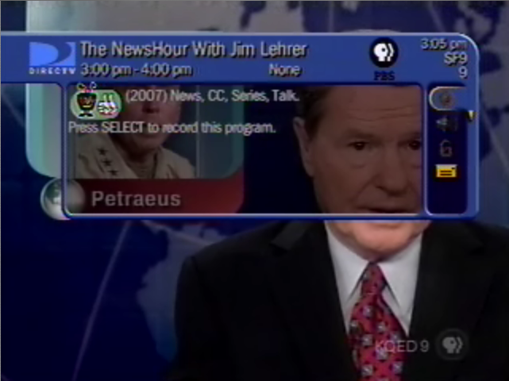

04.12.07
Posted in politics, tv at 11:55 pm by danvk
I watched the Daily Show for the first time in months today. Did it have a noticeable “jumping the shark” moment? It’s not what it used to be. It’s entirely driven by news clips. Play a funny clip, Jon Stewart makes a face and says something sarcastic. Jon laughs at his correspondent being absurd. Jon does an uninteresting interview.
America: The Book was a highlight, but the Crossfire Interview was undoubtedly The Daily Show’s high point. In retrospect, I first remember having my doubts about the Daily Show shortly after the Colbert Report started. I still enjoy Colbert. Somehow their two styles clash in a way that’s very unflattering to Jon. Whatever edge Jon used to have, Stephen’s got it now.
I just watched the Crossfire segment again, and it still brilliant after 18 months. Where’s that Jon Stewart? I wish he’d just talk on his show, instead of falling back on all the news clips and “correspondents”. Maybe then I’d start watching again.
Permalink
04.04.07
Posted in news, tv at 11:23 pm by danvk
I saw something incredibly strange on the online NewsHour tonight, at the 6:26 mark:

Why is PBS using a TiVo to record their own show? I just can’t fathom any way in which this makes sense. At least they gave it two thumbs up.
On a somewhat related note, I watch the NewsHour in QuickTime Player, since VLC’s streaming support isn’t quite there yet. QT Player is a terrible program. In order to go full-screen, you have to fork over $25 to Apple to upgrade to the “Pro version”. This has always struck me as idiotic, so I found this workaround hilarious. Apple forgot to seal this feature off from AppleScript, so if you run this…
tell application “QuickTime Player”
present front movie
end tell
… you’ll go fullscreen without upgrading!
Permalink
04.03.07
Posted in tv at 12:09 am by danvk
 What was New York thinking? Why’s she got to go with the boring ninja turtle? She and Mr. Chance were perfect for each other. You could tell she regretted it the second she let Chance go. And she was surprised that he was mad? Come on New York! I was “really feelin’” her and Chance.
What was New York thinking? Why’s she got to go with the boring ninja turtle? She and Mr. Chance were perfect for each other. You could tell she regretted it the second she let Chance go. And she was surprised that he was mad? Come on New York! I was “really feelin’” her and Chance.
I was happy to find out this past weekend that lots of my Rice friends were watching I Love New York as well. It really was a fun show. But I’ll bet it’s just the beginning. Here’s hoping for the greatest spinoff ever… Second Chance for Love!

Permalink
03.22.07
Posted in sports, tv, web, wikipedia at 11:26 pm by danvk
I’ve been enjoying March Madness the past few weeks, even though my team got knocked out in the first round.
Internet video really is coming into its own. This year, for the first time, you can watch the games online with March Madness on Demand. As with the NewsHour Online Video Archive, there are still some kinks to work out. Biggest gripe: it only works in Internet Explorer 6 on Windows. No love for Mac users like myself. What’s worse is that you don’t even get a message telling you that IE6 is required if you load it in Firefox. It just mysteriously doesn’t work. Hopefully this tool will be better next year. The main thing is that it exists at all.
Oh, and if a game is being broadcast on CBS in your area, you’ll get a message saying it’s been blacked out. Yeesh.
The Wikipedia article on the 2007 tourney has been fun to watch. In the last ten days, it’s received over a thousand edits. Wikipedia edit counts aren’t a bad way to track current events. Here’s what the edit history for last year’s tourney looks like:

The major events stand out in stark relief. One caveat: if an article gets protected by an administrator in response to vandalism, it throws a wrench into the fluidity of edits. I’ll post a similar chart for this year’s tourney after it’s over.
Permalink
« Previous Page
Next entries »
{kind=link}